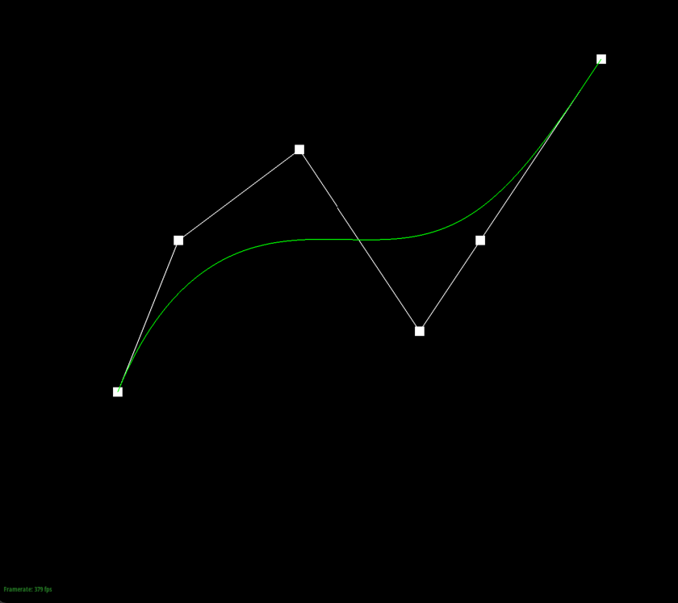
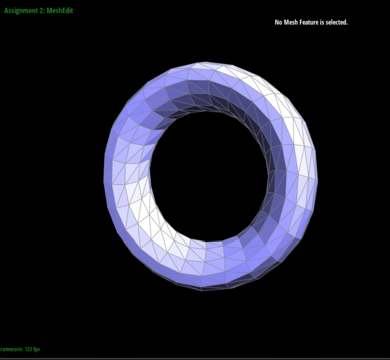

This homework focuses on creating Bezier Curves and Surfaces mainly focusing on the de Casteljau's algorithm and working with triangle meshes through the half-Edge Data Structure. Such functions include
flipping and splitting operations as well as loop subdivision!
Section I: Bezier Curves and Surfaces
Part 1: Bezier curves with 1D de Casteljau subdivision
The de Casteljau's algorithm is an algorithm with a given set of control points and a parameter, that recursively does linear interpolation
to compute intermediate control points and arrive at a single control point that lies on the Bezier curve at the given parameter. I implemented
the algorithm by computing a single recursive step by taking in a vector of control points and a parameter t, and calculating (1-t) * p_i + t * p_(i+1),
for each pair of consecutive points. Then we recursively pass in these new intermediate points to calculate the next set of control points.
Below is a step by step visual of how the Bezier Curve is calculated from 6 control points.

6 Control points
First step
Second step
Third Step
Fourth Step
Final Step
Slightly different Bezier curve by moving original control points and modifying the parameter t via mouse scrolling
Part 2: Bezier surfaces with separable 1D de Casteljau
The de Casteljau algorithm extends to Bezier surfaces by taking each row of control points as its own Bezier curve with a parameter of u. This results in each row outputting
a point. Then we evaluate the resulting points of each row as its own Bezier curve again with parameter v. We applied de Casteljau's algorithm to find a point P thare lies on the Bezier surface
given the parameters of u and v. I implemented this by applying the de Casteljau's algorithm in two helper functions where one calculates one step of the algorithm while the other calls on this function
recursively until the final point is obtained. For the main function, we apply the algorithm through our two helper functions to each row of the control point matrix with parameter u to get a set of final points
where each row represents one point. Then we make one more run of the algorithm on these final points with parameter v to get a point on the Bezier surface.
Screenshot of bez/teapot.bez
Section II: Triangle Meshes and Half-Edge Data Structure
Part 3: Area-weighted vertex normals
First we use the example from the primer with the do/while loop to traverse neighboring faces incident to our vertex using the half-edge datastructure. We do this using the h->twin()->next() for each iteration and stop until we return back to our
original half-edge. To compute our area-weighted normal, we initialize an all zero vector. For each face, we take in the given half-edge corresponding to the face and get the positions of each of the three vertex. Then we calculate the area of the face, we use
the formula of taking the cross product of v1-v0 and v2-v0 and taking half of the norm of this. We then weight the normal by multiplying the area of the face with the unit normal. We add this to our initialized vector and continue the loop. We then return the unit or normalize the sum of all area-weighted normals.
Without vertex normalsWith vertex normals
Part 4: Edge flip
I implemented the edge flip operations with the helpful website given on Ed http://15462.courses.cs.cmu.edu/fall2015content/misc/HalfedgeEdgeOpImplementationGuide.pdf which has allowed me to implement this part with ease. We could have implemented
this is many different ways as the half-edges chosen could be different but I basically followed the directions from this website and encountered no issue. Below are the images before and after some edges were flipped.
Before Edge flipsAfter Edge flips
Part 5: Edge split
I implemented the edge split operation similar to part 4 where I drew a simple mesh and wrote down the list of all elements. An image below shows the results. After drawing, it became simple where I had to reassign pointers in code. For the code, it pretty much was a copy paste of part 4 but with 6 new half-edges, a new vertex, 3 new edges, and 2 new faces.
I did not really encounter any debugging as drawing out the mesh first was a way to minimize errors in my code.
Mesh drawing
Mesh before
Mesh with edge splits
Mesh before
Mesh with both edge splits and flips
Part 6: Loop subdivision for mesh upsampling
Implementing the loop subdivision became easy with the hints provided in the code. First, we loop through all the old vertices and compute the new position. We do this by finding the position of every neighboring vertex and adding them together
and using the degree of the vertex, we calculate u where u=3/16 if n=3 and 3/(8n) otherwise. Once done, we calculate the new position of the old vertex with (1 - n * u) * original_position + u * original_neighbor_position_sum. Then we compute the
new positions for the new vertices created by looping through every original edge of the mesh and getting the position of the four vertices of the two triangles
(A,B,C) and (B,C,D) and then setting the new position to 3/8 * (A + B) + 1/8 * (C + D). Next we go through every edge and split them and also checking if they were an old edge since we do not want to resplit a new edge. Then we flip any new edge that
connects an old and new vertex by checking if only one vertex is new. Finally, we go through every vertex and set the position to the new position. Some outside implementation is adding isNew to the new edges and vertex in split edge code to make sure that we set isNew to true when a new edge is made.
Cow before
Cow 1 subdivision
Cow 2 subdivisions
Torus before
Torus 1 subdivision

Torus 2 subdivisions
From the screenshots of loop subidivison on a cow mesh and a torus mesh, we can see that the sharp corners and edges become more smoother as more loop subdivisions are done due to more edges and vertices
being created after splitting and flipping. And yes, you can reduce this effect by pre-splitting some edges to make the subdivisions less uniform around the shape. We can see this with the cube below where the vertices and edges
are not uniform around. This leads to the cube becoming more oval/egg like in shape. The triangles in the mesh are not symmetrical and subdivision can lead to uneven triangles being formed.
Cube before
Cube 1 subdivision
Cube 2 subdivision
Cube 3 subdivision
Therefore, we want to pre-process the cube with some splits so that the cube can subdivide symmetrically. We do this by splitting every original edge to make an X shape on each face of the cube.
This creates a symmetricaly cube with symmetrical triangles making up the mesh. We can see below how this makes subdivision much more smoother and symmetrical, leading to a shape similar to a sphere. In other words, the splits from
subdivision are done equally throughout each face due to the triangles being symmetrical.